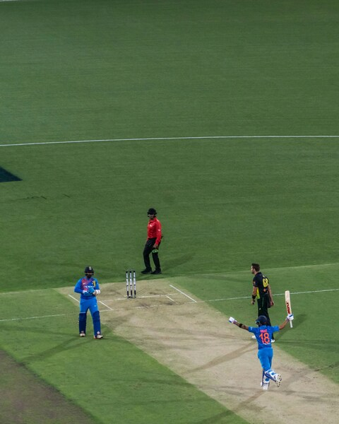

Players & Equipment
Each team consists of 11 players. These eleven players will have varying roles in the team from batsmen, bowlers, fielders and wicket keepers. Whilst each player may have a specialist role they can take up any role should they wish. Pitch sizes vary greatly in cricket but are usually played on a circular grass field with a circumference of around 200m. Around the edge of the field is what's known as the boundary edge and is basically the line between being in play and out of play. In the centre of the pitch will be the wicket. The wicket will have two sets of three stumps at either end and they must be 22 yards apart. At each end of the wicket is known as the crease and a line is drawn about 2 yards across the wicket from the stumps. The bowler will bowl the cricket ball from one end whilst the batsmen will try and hit the ball from the other end. Batsmen can wear a host of padding including leg guards, gloves, thigh guards, inner thigh guards, a box, a helmet and a chest guard. All players will wear spiked shoes and will all be wearing white clothing (the only exception is in shorter games where the players may wear coloured clothing). The cricket ball is made of cork and will be either red (test match) or white (one day games).
